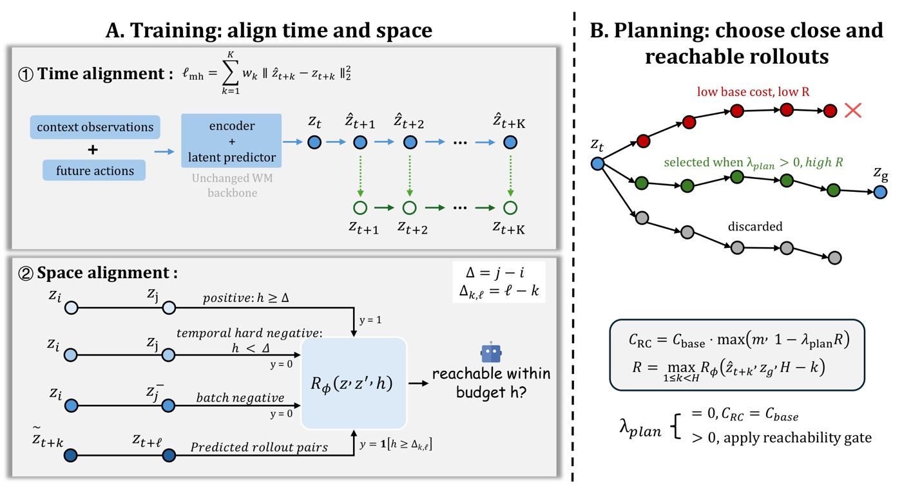
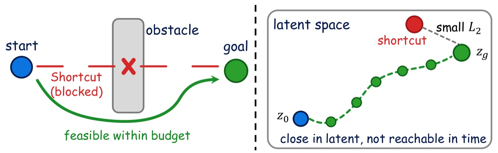
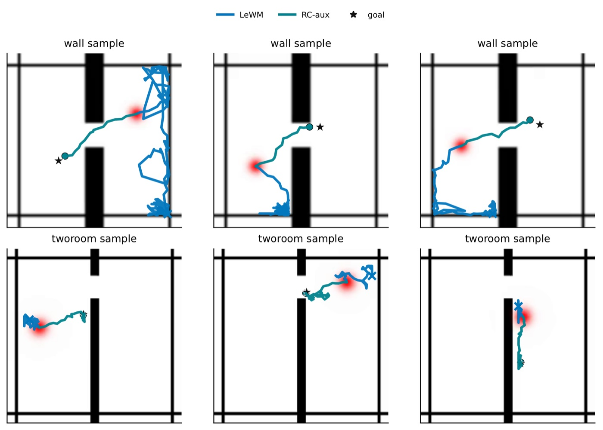
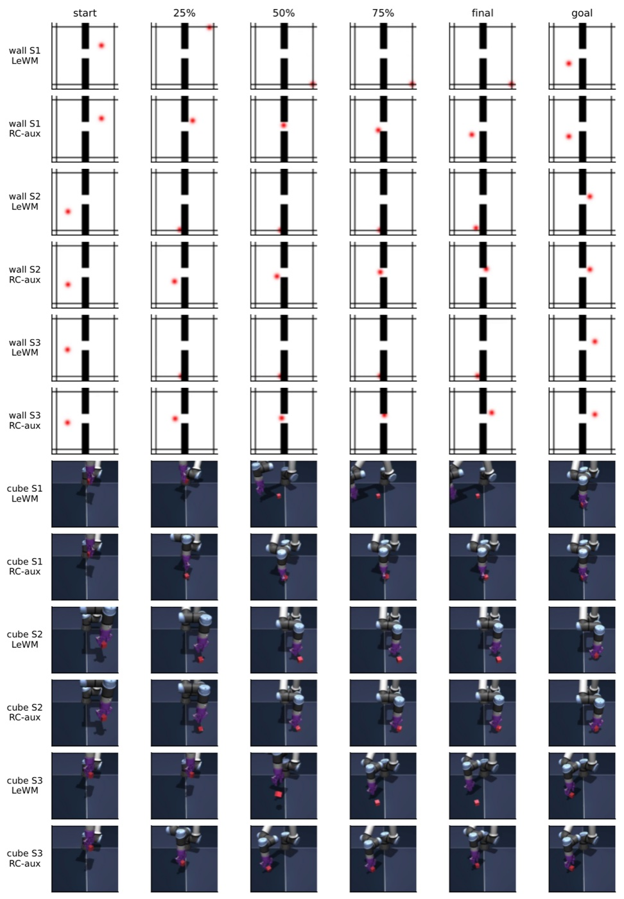
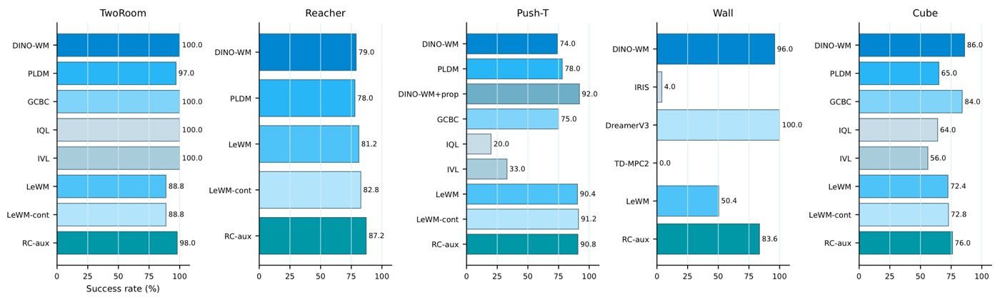

Time axis
Multi-horizon open-loop prediction trains the latent dynamics beyond one-step consistency, exposing the model to the rollout structure used by MPC-style search.
arXiv:2605.07278
RC-aux makes reconstruction-free latent world models more useful for long-horizon planning by teaching the representation what is reachable under a finite action budget.
Hokkaido University
Core idea
Latent world models are often trained with local predictive supervision, then deployed for goal-directed search over longer horizons. RC-aux targets that mismatch with lightweight supervision that preserves the LeWorldModel backbone while adding planning-aligned structure.
The objective combines multi-horizon open-loop prediction, budget-conditioned reachability supervision, and temporal hard negatives. At test time, the learned reachability signal can also guide the planner toward trajectories that are goal-directed and attainable.
Method
Multi-horizon open-loop prediction trains the latent dynamics beyond one-step consistency, exposing the model to the rollout structure used by MPC-style search.
Budget-conditioned reachability supervision encourages the latent space to separate states that are eventually reachable from those reachable within the current planning horizon.
A reachability-aware planner can use the learned signal as an auxiliary cost, favoring candidates that stay both goal-directed and feasible under the available budget.

Visualizations
The reference page uses large paper figures as the backbone of the story; here the figures are arranged to move from the latent failure case to qualitative rollouts.



Reported results
Mean +/- std over five fixed evaluation groups of 50 episodes. Matched deltas compare against LeWM-cont except Wall, which compares against local LeWM.
50.4 to 83.6
88.8 to 98.0
82.8 to 87.2
72.8 to 76.0

| Task | LeWM | LeWM-cont | RC-aux | Matched delta |
|---|---|---|---|---|
| TwoRoom | 88.8 +/- 3.0 | 88.8 +/- 3.0 | 98.0 +/- 1.4 | +9.2 |
| Reacher | 81.2 +/- 7.9 | 82.8 +/- 7.2 | 87.2 +/- 6.4 | +4.4 |
| Push-T | 90.4 +/- 3.0 | 91.2 +/- 3.9 | 90.8 +/- 3.3 | -0.4 |
| Wall | 50.4 +/- 6.5 | -- | 83.6 +/- 3.6 | +33.2 |
| Cube | 72.4 +/- 5.9 | 72.8 +/- 5.2 | 76.0 +/- 7.5 | +3.2 |
Code
The repository includes pixel-control training, MPC evaluation, RC-aux objectives, configs, result summaries, and a LIBERO-Goal extension.
python eval.py --config-name=tworoom.yaml \
cache_dir="$STABLEWM_HOME" \
policy=tworoom_rcaux/rcaux_tworoom \
+planner_override.use_reachability_cost=true \
+planner_override.reachability_cost_weight=0.85Citation
@article{li2026predictive,
title={Predictive but Not Plannable: RC-aux for Latent World Models},
author={Li, Wenyuan and Li, Guang and Maeda, Keisuke and Ogawa, Takahiro and Haseyama, Miki},
journal={arXiv preprint arXiv:2605.07278},
year={2026}
}